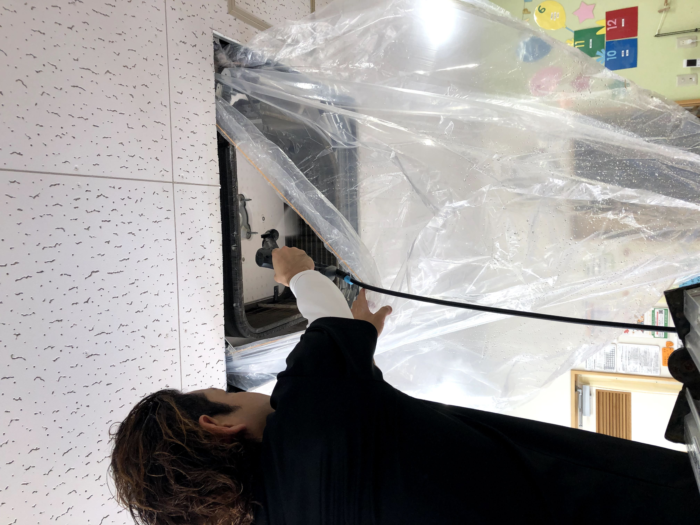

那覇市｜購入約2年のRIAIRエアコン完全分解
購入から約2年のエアコンを分解し、送風ファン・ドレンパンの汚れを確認した施工例です。汚れ方は使用環境によって異なります。

南部応援価格 8,000円（税込）／完全分解 14,000円（税込）
家族が毎日使うエアコンを、内部まできれいに。清掃・現場経験17年の代表が、通常分解と完全分解から必要な洗浄をご提案します。
LINEで写真・型番を送って相談する対応：南城市・八重瀬町・南風原町・与那原町・豊見城市・糸満市・那覇市。相談だけでも大丈夫です。
沖縄南部でも、冷房運転中の結露や室内のホコリ、使用頻度などによってエアコン内部にカビや汚れがたまることがあります。ただし、同じ市町村でも建物・機種・換気・使用状況によって状態は異なります。
海の近くでは潮風、農地の近くでは砂埃、集合住宅では換気や設置場所など、気になる条件はさまざまです。BCサービスは地域名だけで分解洗浄の必要性を判断せず、写真・型番と実際の症状を確認します。
ニオイや黒ずみが気になる場合はご相談ください。冷えの悪さは機器の故障や冷媒不足など清掃以外の原因も考えられるため、洗浄で改善すると断定せず、状況に合った次の一手をご案内します。
南部7市町すべてに対応しています。地域ページでは、よくあるご相談や作業条件を詳しくご案内しています。
BCサービスは、6児の父である代表が直接対応する子育て家庭特化のクリーニングサービスです。南部エリア全域で以下の方針を徹底しています。
子育て家庭にとって、安心して選ばれるサービスであり続けます。
内部汚れの状態と分解洗浄の様子を、那覇市の施工例でご覧ください。
購入から約2年のエアコンを分解し、送風ファン・ドレンパンの汚れを確認した施工例です。汚れ方は使用環境によって異なります。
3台、完全分解を依頼しました。
他の業者の方が届かない場所まで綺麗にして頂き、ありがとうございました。
応援価格
8,000円（税込）
南城市・八重瀬町・南風原町・与那原町・豊見城市・糸満市・那覇市
子育て家庭を応援するための特別価格です。
200世帯達成までの限定価格となります。
税込 8,000円
※機種・設置状況により対応できない場合があります。
※どちらも200世帯達成までの感謝価格です。
リピートのお客様は感謝価格8,000円で対応いたします。
※お掃除機能付きは15,000円（税込）が目安です。機種・設置状況によって対応方法を事前に確認します。
🌿 200世帯達成前に予約する南部限定8,000円は200世帯達成まで。
2台以上の同時予約で、2台目以降は1台につき1,000円引き
カビ・ニオイ対策として、作業後に抗菌コートを無料で施工します（希望者のみ）。
※機種・状況により施工できない場合があります。その場合は事前にお伝えします。
「これ故障？掃除で直る？」を1分で判定できるチェックリストをLINEでお渡しします。
チェックリストの全文はLINEで配布しています（LINEで全文を見る）。

子育て家庭応援クリーニング 代表
照屋 昴
（6児の父）
第二種電気工事士
清掃業界17年
子育て家庭にとって、安心して選ばれるサービスであり続けます。
施工品質・返金保証
契約したエアコンの分解・洗浄範囲が対象です。
施工完了日から14日以内にLINEまたは電話でお申し出ください。契約範囲内の当社の施工不備は無料で再施工・手直しします。再施工でも改善できない場合、または改善が不可能な場合は、不備のある施工項目の実支払額を基準に返金します。複数台・複数箇所は原則として該当する台数・箇所のみ対象です。
ニオイだけを理由とする無条件返金は行いません。当社の洗浄不足が原因の場合は対象です。 経年劣化・施工範囲外などは対象外です。本制度は法令上のお客様の権利を制限しません。
万一の事故にも備えています。 損害賠償責任保険加入（補償限度額1億円）。保険による補償は契約条件・事故状況によります。施工品質・返金保証とは別制度です。
南部エリア（南城市・八重瀬町・南風原町・与那原町・豊見城市・糸満市・那覇市）は子育て家庭応援価格として8,000円（税込）で対応しています。お掃除機能付きエアコンは15,000円（税込）です。200世帯達成までの限定価格です。
南城市・八重瀬町・南風原町・与那原町・豊見城市・糸満市・那覇市への出張費は無料です。追加の交通費等は発生しません。
はい、大丈夫です。養生を丁寧に行い、作業スペースを区切ります。代表自身が6人の子どもの父であり、お子さまがいる環境での作業に慣れています。
梅雨前の4〜5月や冷房シーズン後の10〜11月など、ご都合に合わせてご相談ください。ニオイや黒ずみが気になるときは季節にかかわらず状態を確認します。冷えの悪さは故障など清掃以外の原因も考えられます。
追加料金が発生する可能性がある場合は、必ず事前にご説明し、ご納得いただいてから作業します。説明なく請求することはありません。
南部応援価格の対象は南城市・八重瀬町・南風原町・与那原町・豊見城市・糸満市・那覇市です。その他沖縄本島全域も通常価格で対応しています。
ニオイの軽減は期待できますが、素材への染み付きや経年劣化、設置環境などによって、ニオイが残る場合がございます。
また、ニオイの感じ方には個人差があるため、完全除去を保証するものではなく、ニオイの残留のみを理由とした返金は対象外となります。
ただし、当社の洗浄不足が確認された場合は、施工品質・返金保証に基づき、責任を持って対応いたします。
施工完了日から14日以内にLINEまたは電話でお申し出ください。状況・原因を確認し、契約範囲内の当社の施工不備は無料で再施工・手直しします。改善できない場合、または改善が不可能な場合は、該当する施工項目の実支払額を基準に返金します。複数台・複数箇所は原則として該当部分のみ対象です。
14日間は自主返金保証のお申し出期間です。法令上のお客様の権利を制限するものではありません。
地域ごとのエアコン汚れの特徴や対策を詳しく解説しています。
高台の霧と湿気がエアコンに与える影響を解説
土埃・花粉・湿気の影響と対策
住宅密集と長時間稼働が生むカビリスク
中城湾の潮風が内部に与える影響
共働き世帯と室内干しの影響
海沿いの湿度と潮風がカビに与える影響
沖縄南部（南城市・八重瀬町・与那原町・南風原町・糸満市・豊見城市・那覇市）を中心に訪問しています。拠点はこちらです。
南部の子育て家庭応援価格・通常分解8,000円、完全分解14,000円（税込、200世帯達成まで）。
2台以上の同時予約で2台目以降は1台につき1,000円引き。
LINE友だち追加特典：ご希望の方に抗菌コート無料。作業内容と料金目安を事前にご案内します。